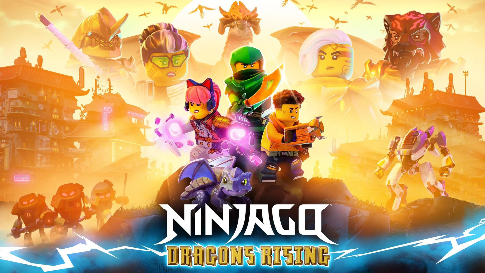
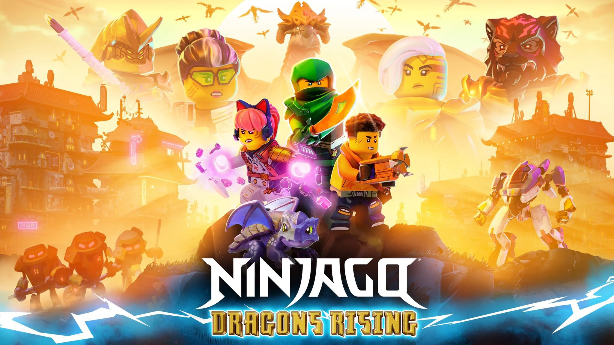

Asalamoe Alaykoem! Ik ben Anass El Bachiri en zoals je kan zien ben ik een super interessante moslim.
Wat doet Anass?
Dit is een website over de De Vijf Zuilen Van Islam. Deze website is gemaakt als kennisbron voor moslims en niet-moslims.
de "Brown Bear" pagina was mijn allereerste pagina waar ik mee heb geoefend.
Daarna begon ik met de "About Me" pagina en later nog de vijf zuilen van Islam.
Mijn favoriete Tv show:
Dat is natuurlijk NInjago, het is te nostalgisch en heeft het beste verhaal en beste karakterontwikkeling ooit.
Nu ga je beter ook de serie kijken, anders kom ik persoonlijk met een vliegende draak naar jouw huis toe om het te vernietigen. Danku :)
 
